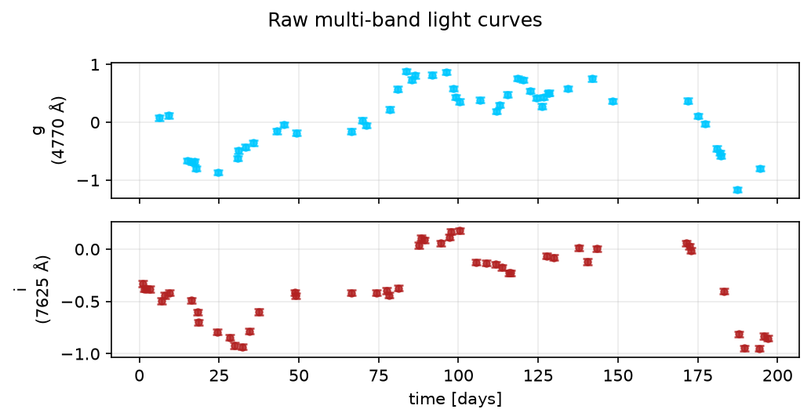
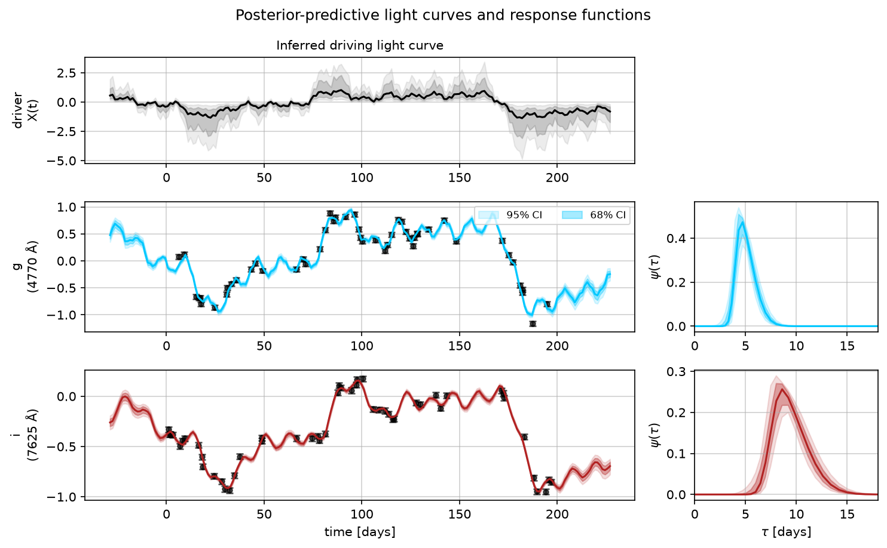
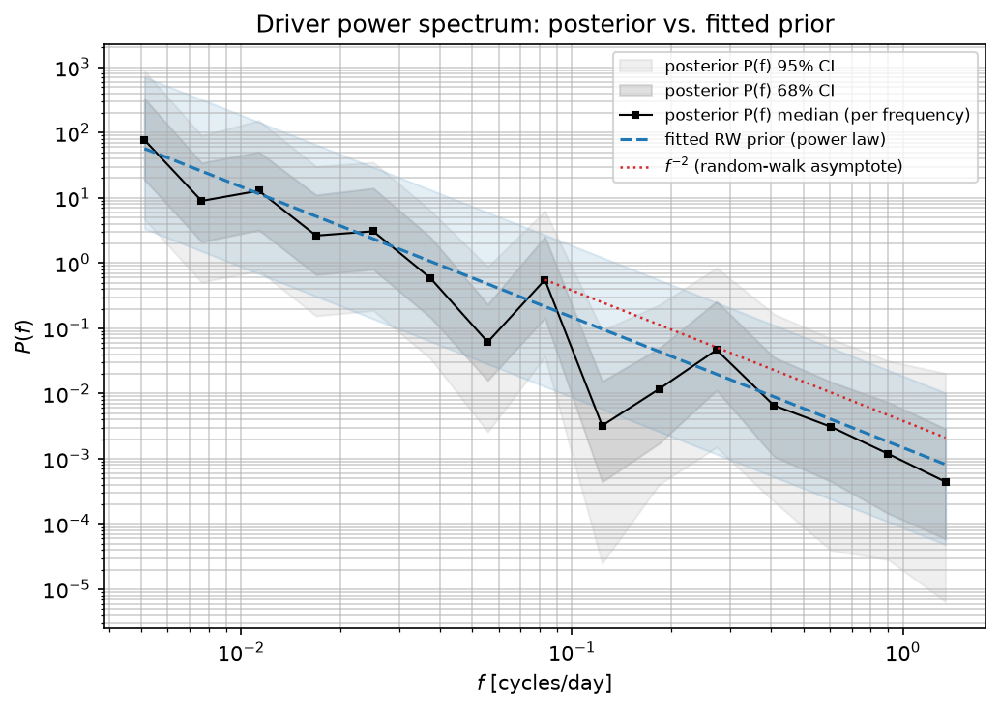
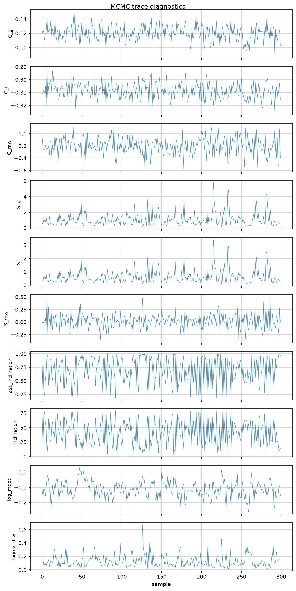
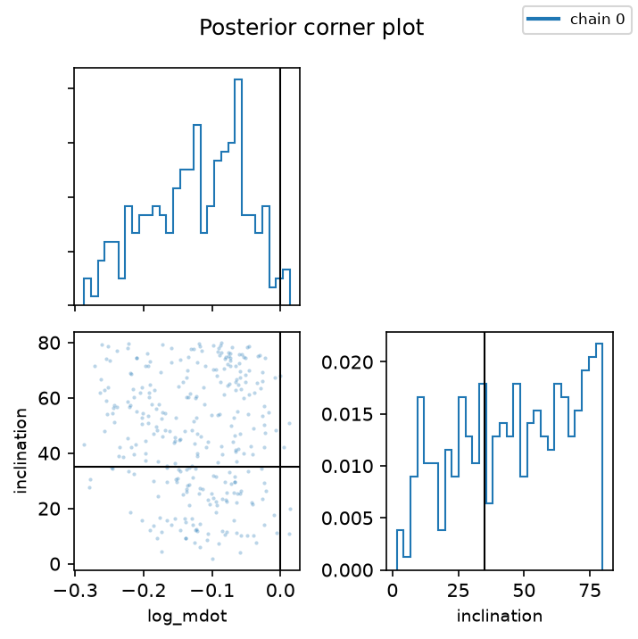
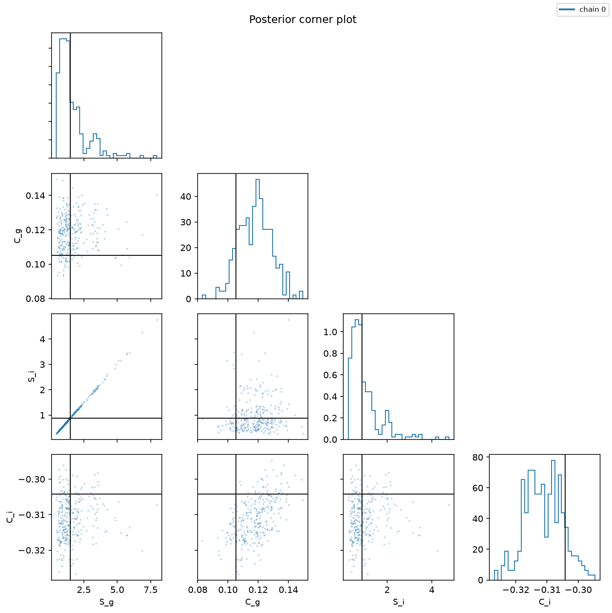
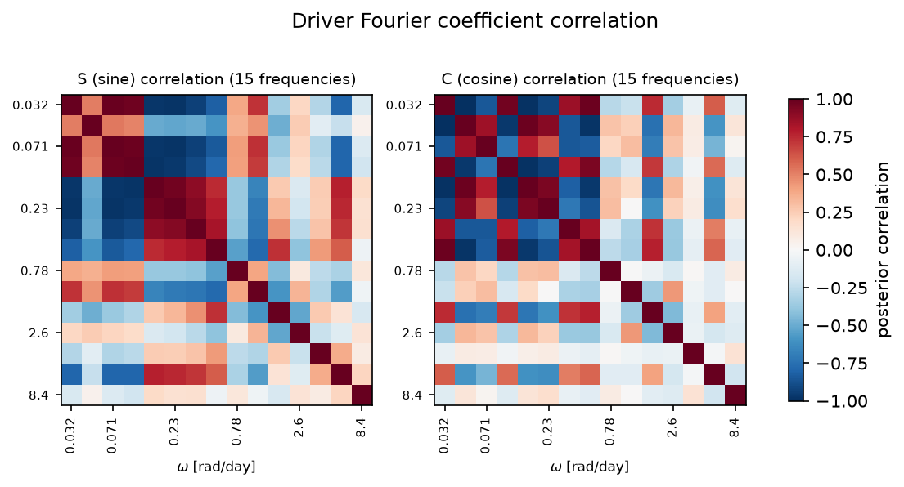
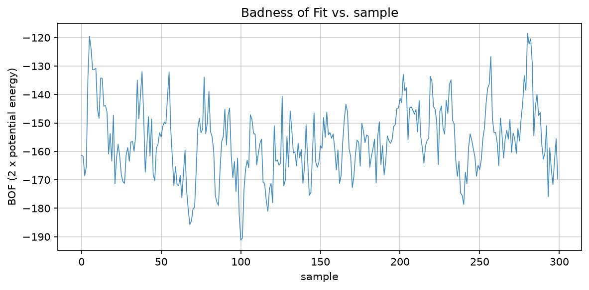

fit wall time: 56.3s | divergent transitions: 0/300
| parameter | posterior mean | posterior std | truth |
|---|---|---|---|
| C_g | 0.1203 | 0.01038 | 0.1052 |
| C_i | -0.3085 | 0.006126 | -0.3042 |
| S_g | 1.081 | 0.8348 | 1.482 |
| S_i | 0.645 | 0.4964 | 0.8782 |
| cos_inclination | 0.6974 | 0.2409 | — |
| inclination | 41.68 | 21.12 | 35 |
| log_mdot | -0.1126 | 0.05267 | 0 |
| sigma_drw | 0.127 | 0.0913 | 0.3 |

Shaded bands are 68%/95% credible intervals; black points are the data. The top panel is the inferred driving light curve (time-aligned with the bands below it), extended a bit before/after the data -- the credible band should widen roughly like t^(1/2) outside the data before saturating, since the driver is a DRW. The right-hand panels are the inferred response function ψ(τ) per band.

Posterior P(ω) = (S2+C2)/(2Δω) per frequency (black squares) vs. the fitted DRW Lorentzian from posterior sigma_drw/tau_drw draws (blue dashed) and a plain ω-2 random-walk reference (red dotted). These should roughly track each other -- if the posterior power spectrum diverges from the Lorentzian shape a lot, that's worth a closer look.

Traces should look like noisy horizontal bands (well-mixed), not slow drifts or a chain stuck at one value.

log_mdot / inclination, coloured per chain. Chains that land in visibly different places here are the same thing a Gelman-Rubin R-hat check would flag, made visible -- see CLAUDE.md's note on why a single chain isn't sufficient evidence of convergence.

S_band / C_band for every band -- the linear scale and offset absorbing each band's own flux calibration, not physically meaningful on their own but worth checking for the same reason as the disk corner plot above: chains disagreeing here means the fit hasn't converged.

Posterior correlation matrix of the driver's S/C Fourier coefficients (pooled across chains). Mostly-diagonal (near zero off-diagonal) is what the non-centred DRW prior parameterisation assumes; strong off-diagonal structure would be worth a closer look.

2 x NUTS potential energy, one line per chain -- exactly the Badness-of-Fit that Starkey, Horne & Villforth (2016, MNRAS 456, 1960) eq. 12 defines, up to an additive constant. Should decrease during warm-up then flatten out once the chain has converged; vertical grey lines (if shown) mark checkpoint boundaries.
